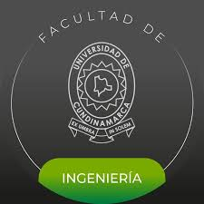
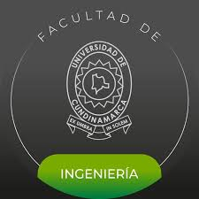

Objetivo del Proyecto
 

El Foro Ambiental de San Antonio del Tequendama nace como una iniciativa estudiantil de la Universidad de Cundinamarca, en el marco del proyecto del CAI de Ciudadanía del Siglo XXI, con el propósito de fomentar la conciencia ecológica, el diálogo y la participación activa de la comunidad frente a los desafíos ambientales que enfrenta nuestro municipio.
🌿 Un espacio para aprender, compartir y actuar
Este foro busca ser mucho más que una plataforma digital; pretende convertirse en un espacio de encuentro ciudadano donde las voces de la comunidad, los estudiantes, las autoridades y los sectores productivos puedan encontrarse para debatir, reflexionar y construir juntos soluciones sostenibles. A través de la palabra, la escucha y la cooperación, queremos fortalecer una cultura ambiental basada en el respeto y la corresponsabilidad.
💧 Fomentar la conciencia ambiental
Queremos que cada visitante comprenda la magnitud de las problemáticas ambientales que afectan al municipio, especialmente aquellas relacionadas con la contaminación del agua, el manejo inadecuado de residuos y la pérdida de la biodiversidad. Nuestro objetivo es motivar a la acción: que cada persona se sienta parte del cambio, que adopte prácticas sostenibles y promueva el cuidado del entorno desde su hogar, su trabajo o su comunidad.
🤝 Conectar la academia con la sociedad
Este proyecto une la investigación universitaria con la realidad local. A través del foro, la Universidad de Cundinamarca busca poner su conocimiento al servicio de la sociedad, generando un puente entre la ciencia, la educación y la acción social. Creemos que la formación integral incluye el compromiso con el territorio, y que los estudiantes somos agentes de transformación que podemos inspirar a otros a actuar con responsabilidad ambiental.
🌱 Nuestro propósito final
El propósito final del Foro Ambiental es impulsar una ciudadanía consciente, informada y participativa que defienda los recursos naturales como parte esencial de la vida y la identidad del Tequendama. Queremos que este espacio digital se convierta en un símbolo de esperanza y unión, donde las ideas florezcan y las acciones transformen nuestro entorno para las generaciones futuras.
Porque cuidar el ambiente no es solo una tarea, es un compromiso con la vida misma.